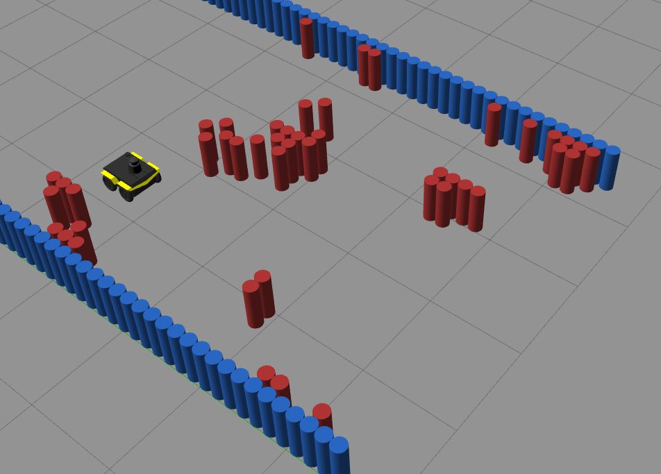
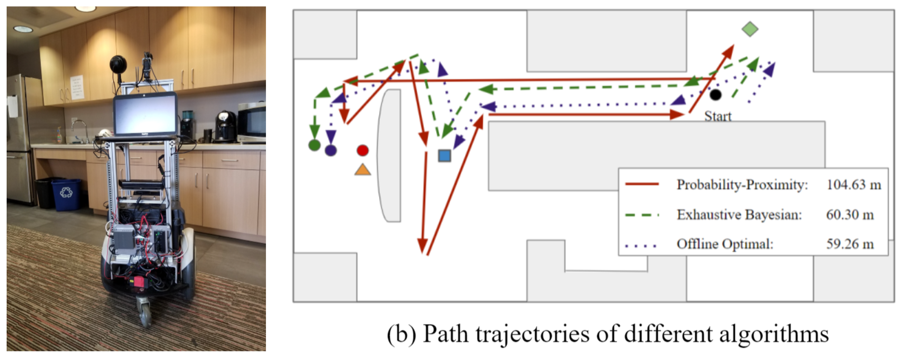
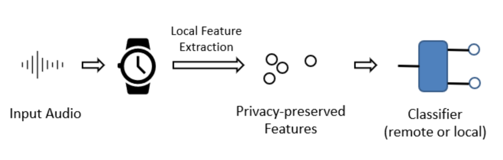

ProjectsAdaptive Planner Parameter Learning from Reinforcement (APPLR) Classical navigation systems typically operate using a fixed set of hand-picked parameters (e.g. maximum speed, sampling rate, inflation radius, etc.) and require heavy expert re-tuning in order to work in new environments. To mitigate this requirement, we introduce APPLR, Adaptive Planner Parameter Learning from Reinforcement, which allows existing navigation systems to adapt to new scenarios by using a parameter selection scheme discovered via reinforcement learning (RL) in a wide variety of simulation environments. We evaluate APPLR on a robot in both simulated and physical experiments, and show that it can outperform both a fixed set of hand-tuned parameters and also a dynamic parameter tuning scheme learned from human demonstration. My contributions
Lifelong Learning Machine (L2M) — Scavenger Hunt Service Robot The project targeted an optimization problem that minimizes traveling distance for fetching a list of random objects in the environment using a service robot. The problem is formulated as a variation of the NP-hard stochastictraveling purchaser problem. We investigate the performance of several solution algorithmsfor the SH problem, both in simulation and on a real mobilerobot. We use Reinforcement Learning (RL) to train an agentto plan a minimal cost path, and show that the RL agentcan outperform a range of heuristic algorithms, achieving nearoptimal performance. Lifelong learning algorithms were integrated to solve the problem under the lifelong learning setting that changes the tasks and environments continuously. My contributions
Smartphone-based Foreground Speech Detection In this project, we explore the opportunity of automatically detecting the wearer’s foreground speech in naturalistic domestic environments by using a commodity smartwatch. We provide in-depth quantitative evaluations of the performance based on field recordings collected from 11 groups of participants in their home and show the feasibility of foreground speech detection by using only high-level acoustic-based and embedding-based input features. My contributions
|